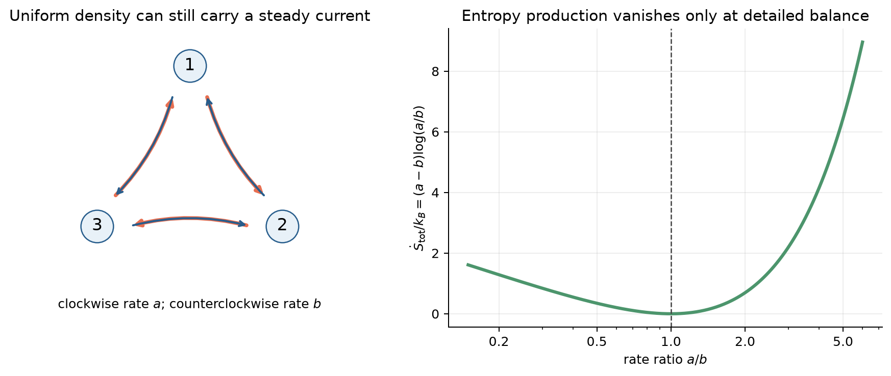
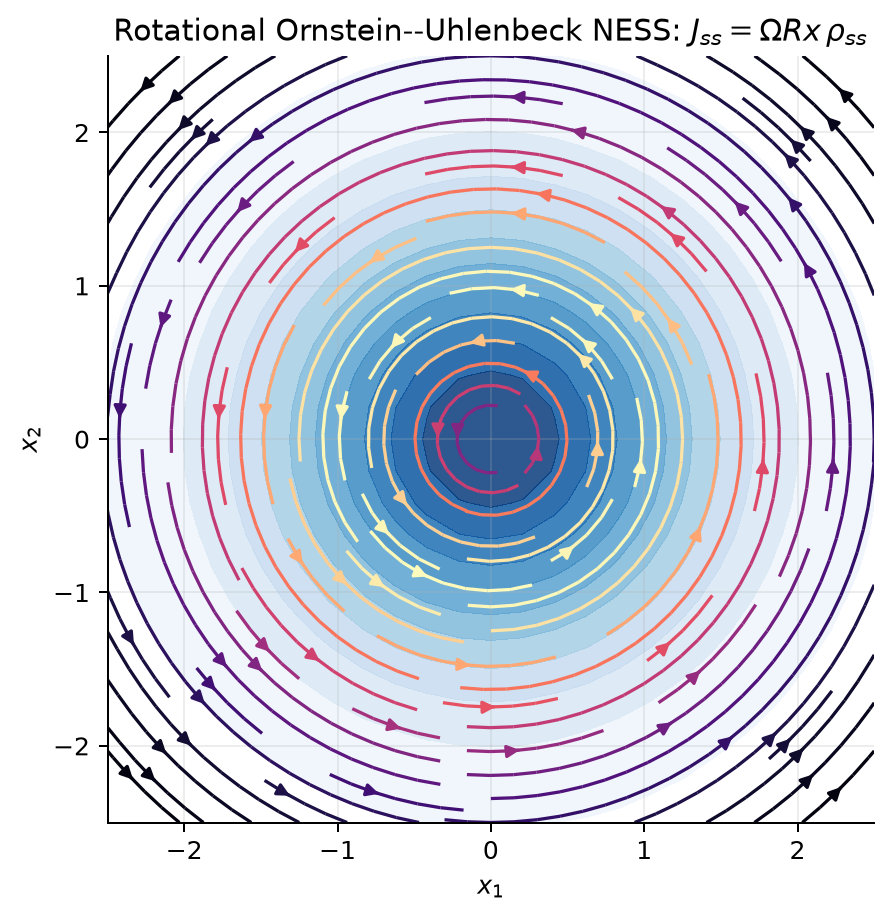
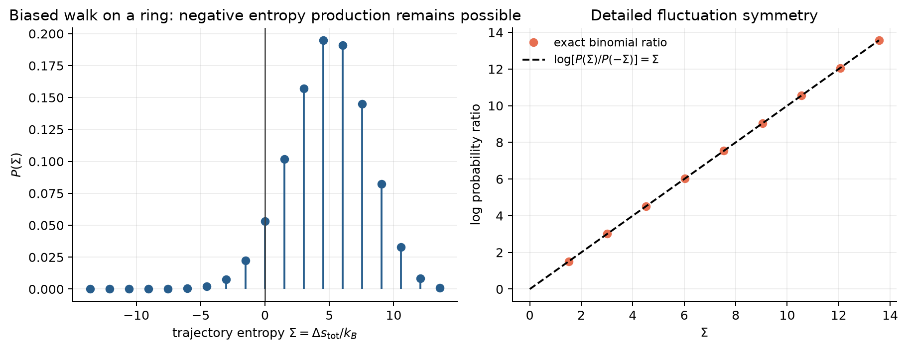
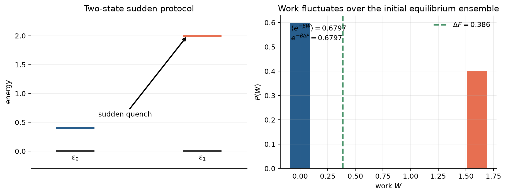

时间箭头体现在同一段运动正放与倒放时，出现概率的差别。
路径概率与时间箭头
经典力学和量子力学的微观方程往往具有时间反演对称，但热咖啡会冷却，破碎的杯子不会自发复原。对宏观系统，我们用“熵增”概括这一方向性；对胶体粒子、分子马达或小型生化网络，热涨落大到不能忽略，“逆着平均方向”的短轨迹不仅可能，而且可以被精确定量。
这件事可以压缩成一个对象：
即正向轨迹 \(\gamma\) 与其反向轨迹 \(\tilde\gamma\) 的路径概率比的对数。若一段运动正放比倒放常见，\(\Sigma\) 就为正；两者同样可能时，这段轨迹没有提供时间方向的线索。在满足热力学一致性的 Markov 模型中，按下文“局部细致平衡与热交换”一节配对正反过程，\(k_B\Sigma\) 就是总熵产生。[1,2]
Markov 网络与稳态环流
主方程与概率流
设系统处于离散状态 \(i=1,\ldots,N\)，从 \(i\) 跳到 \(j\) 的速率为 \(k_{ij}\)。概率 \(p_i(t)\) 满足
定义边 \(i\to j\) 上的净概率流
则主方程就是图上的连续性方程
稳态 \(\pi_i\) 只要求每个节点净流入为零：
它允许概率沿环持续流动。细致平衡则要求更强的逐边条件
即 \(J^{\mathrm{ss}}_{ij}=0\) 对每条边都成立。
局部细致平衡与热交换
细致平衡是稳态的全局性质；局部细致平衡（local detailed balance）则是单次跃迁的热力学一致性条件。若跃迁 \(i\to j\) 向温度 \(T\) 的热库放出热量 \(q^{\mathrm{env}}_{ij}\)，则
这里采用 \(q^{\mathrm{env}}>0\) 表示热流入环境的约定。对无外功的纯能量跃迁，
因此下山跃迁比上山跃迁更常见。若跃迁伴随化学反应、粒子交换或机械功，\(q^{\mathrm{env}}\) 必须包含相应储库的能量和化学功贡献；不能仅凭一个任意的速率比就声称它是物理热。
一条跳跃轨迹为
环境熵变定义为
系统随机熵不是状态 \(i\) 本身的固有数，而依赖当时系综分布：
因此
总熵产生是
将反向实验从正向实验的终分布开始，倒序施加外部协议，并要求每条允许路径都有允许的反向路径。比较两者的概率时，在各状态停留的等待时间因子抵消：每次跳跃留下一个速率比，初末分布留下系统熵变。因此
式（17）把热交换与时间方向联系起来：沿途向环境放热、加上系统分布的变化，恰好决定这一轨迹比反向轨迹常见多少。
平均熵产生与第二定律
熵产生率
对 Markov 跳跃过程，系统 Gibbs–Shannon 熵为
利用主方程可得平均总熵产生率
每条边上，净流都指向正反通量中较大的一侧，对数比也具有相同符号。也就是 \((a-b)\log(a/b)\ge0\)，所以各边贡献都非负：
对连通、正反速率都非零的有限网络，等号要求所有边上 \(p_i k_{ij}=p_j k_{ji}\)。在稳态中，这就是细致平衡。
式（19）还可分成
其中
稳态时 \(\dot S_{\mathrm{sys}}=0\)，但 NESS 的 \(\dot S_{\mathrm{env}}=\dot S_{\mathrm{tot}}>0\)。“分布不变”因而并不意味着“没有耗散”。
经典例子：三态环
考虑三个状态组成的环。顺时针速率均为 \(a\)，逆时针速率均为 \(b\)。由对称性，稳态分布仍然均匀：
每条顺时针边上的净流为
环亲和力和总熵产生率分别为

图 1｜均匀分布不代表平衡。 \(a\ne b\) 时，三个状态的占据概率都是 \(1/3\)，但环流与熵产生都非零。这是区分 stationarity 与 equilibrium 的最小模型。
连续扩散：概率流中的不可逆性
过阻尼 Langevin 过程
对所有坐标在时间反演下为偶变量的过阻尼扩散，写成 Itô SDE
其中 \(\mathbf D\) 是常数正定扩散矩阵。概率密度满足
在周期边界或无通量边界下，相应的平均总熵产生率为
对过阻尼单热库系统，令 \(\mathbf b=\mu\mathbf F\) 且 \(\mathbf D=\mu k_BT\mathbf I\)。若稳态时 \(\mathbf J_{\mathrm{ss}}=0\)，则
因此力是梯度型的，且 \(\rho_{\mathrm{ss}}\propto e^{-\beta U}\)。但 stationarity 只要求
允许非零旋转流。任意稳态力都可写成
第一项与扩散平衡，维持密度的空间分布；第二项使概率继续运动，却不在任何位置积累。它将同一个稳态中的“分布形状”和“持续流动”分开了。
经典例子：旋转 Ornstein–Uhlenbeck 稳态
在二维取
并取无量纲单位 \(\mu=k_B=1\)。稳态密度不依赖 \(\Omega\)：
但稳态概率流为
旋转力沿着等密度线推动粒子，不改变径向分布，却持续产生流。将式（34）代入式（28），利用高斯分布的 \(\langle|\mathbf x|^2\rangle=2T/k\)，得到

熵产生的涨落关系
积分涨落定理
将式（17）取负指数，正向路径概率恰好被换成反向路径概率；对所有路径求和，归一化便给出
这是积分涨落定理。[1] Jensen 不等式给出
第二定律因而是轨迹分布的平均结论，不是“每条轨迹的熵都必须增加”。式（36）反而要求：若平均熵产生为正，分布中必须有足够的稀有低熵产生轨迹来使指数平均精确等于 1。
平均熵产生还是两个路径测度的 KL 散度：
所以平均耗散就是区分“电影正放”与“电影倒放”的平均对数证据。
细致涨落关系
在正反向过程配对正确的条件下，无量纲熵产生 \(\Sigma=\Delta s_{\mathrm{tot}}/k_B\) 满足
对稳态且反向过程与正向过程同分布的特例，它简化为 \(P(\Sigma)/P(-\Sigma)=e^\Sigma\)。不同初态、奇变量、磁场或反馈控制会改变“反向过程”的定义，不可在未配对路径测度时直接套用式（39）。Crooks 对微观可逆随机动力学给出了具体的有限时间关系。[4]
经典例子：环上的有偏随机游走
取周期格点环，从均匀稳态出发。每一步顺时针概率为 \(p\)，逆时针概率为 \(q=1-p\)，并将 \(\log(p/q)\) 解释为每次顺向跃迁的环境熵增。经过 \(n\) 步，若顺时针和逆时针步数分别为 \(n_+\) 和 \(n_-\)，则均匀稳态使系统熵的端点项抵消，路径总熵产生为
对任意给定步骤排列，其正反路径概率比恰为 \(e^\Sigma\)。对所有排列求和后仍有式（39）。

图 3｜短时间内的“逆第二定律”轨迹仍有非零概率。 左图中 \(\Sigma<0\) 的杆没有消失；右图显示正负熵产生事件的概率比按 \(e^\Sigma\) 变化。
非平衡功与平衡自由能
轨迹一定律
设系统 Hamiltonian 为 \(E(x;\lambda_t)\)，外部协议 \(\lambda_t\) 对系统做功 \(W\)，\(Q_{\mathrm{env}}\) 是系统放给热库的热。采用
若正向过程从 \(\lambda_0\) 的正则平衡分布出发，反向过程从 \(\lambda_\tau\) 的正则平衡分布出发，则正反路径比定义的无量纲耗散泛函为
其中 \(\Delta F=F(\lambda_\tau)-F(\lambda_0)\)。这里的反向实验从终点参数对应的平衡态开始，正向实验却未必来得及达到该平衡态。因此 \(\beta(W-\Delta F)\) 与式（16）使用实际终分布定义的总熵产生一般不同；二者的差别来自初末分布的选取。
Crooks 关系与 Jarzynski 等式
将式（42）代入细致涨落关系，得到 Crooks 功关系
两条分布的交点满足 \(W=\Delta F\)。对式（43）积分得
这是 Jarzynski 等式。[5] 它对驱动速率没有准静态要求，但要求正确的初始平衡制备和满足微观可逆性/局部细致平衡的动力学。Jensen 不等式再给出
指数平均赋予小 \(W\) 的轨迹很大权重。驱动越剧烈，这类轨迹可能越稀有，因而用有限次数实验估计 \(\Delta F\) 会很困难，即使等式本身依然成立。
例子：两态系统瞬时淬火
两个能级为 \(E_0=0\) 和 \(E_1=\epsilon\)。系统初始在 \(\epsilon_0\) 下平衡，随后瞬时将能隙改为 \(\epsilon_1\)。初始激发态概率是
由于淬火时状态来不及跳跃，功只有两个可能值：
因此

图 4｜不可逆的瞬时驱动仍然精确编码了平衡自由能差。 左图是能隙突变，右图是两点功分布。Jarzynski 等式依赖整个初始平衡系综，不要求单次功等于自由能差。
非平衡稳态与精度代价
Jarzynski 等式比较初末参数对应的平衡自由能，实际驱动过程的终态未必平衡。若外部储库始终维持非零稳态流，则需要以每个固定控制参数 \(\lambda\) 下的 NESS 分布 \(\rho_{\mathrm{ss}}(x;\lambda)\) 为基准。定义非平衡势
以及沿驱动轨迹的泛函
对从初始 NESS 出发、具有对应瞬时稳态族的 Langevin/Markov 动力学，Hatano–Sasa 关系为
它把维持 NESS 的 housekeeping 耗散与改变稳态分布所产生的 excess 部分区分开。[6] 不同文献的符号和分解不同，使用前必须固定热流方向与反向动力学。
耗散还可能限制流的精度。对一类连续时间、平稳、长时间的 Markov 网络，热力学不确定性关系（TUR）将累积流 \(\mathcal J_t\) 的相对涨落与总熵产生联系起来：
例如，若把分子马达的净步数作为累积流，式（52）限制了步数涨落能有多小：在这些条件下，要稳定地沿一个方向运行，就需要付出耗散。[7] Hatano–Sasa 讨论稳态之间的驱动，TUR 讨论持续流动的精度，两者关注耗散的不同作用。
参考文献
- U. Seifert, “Entropy Production along a Stochastic Trajectory and an Integral Fluctuation Theorem,” Physical Review Letters 95, 040602 (2005), DOI: 10.1103/PhysRevLett.95.040602。
- U. Seifert, “Stochastic Thermodynamics, Fluctuation Theorems and Molecular Machines,” Reports on Progress in Physics 75, 126001 (2012), arXiv:1205.4176。
- J. Schnakenberg, “Network Theory of Microscopic and Macroscopic Behavior of Master Equation Systems,” Reviews of Modern Physics 48, 571–585 (1976), DOI: 10.1103/RevModPhys.48.571。
- G. E. Crooks, “Entropy Production Fluctuation Theorem and the Nonequilibrium Work Relation for Free Energy Differences,” Physical Review E 60, 2721–2726 (1999), DOI: 10.1103/PhysRevE.60.2721。
- C. Jarzynski, “Nonequilibrium Equality for Free Energy Differences,” Physical Review Letters 78, 2690–2693 (1997), DOI: 10.1103/PhysRevLett.78.2690。
- T. Hatano and S.-i. Sasa, “Steady-State Thermodynamics of Langevin Systems,” Physical Review Letters 86, 3463–3466 (2001), DOI: 10.1103/PhysRevLett.86.3463。
- A. C. Barato and U. Seifert, “Thermodynamic Uncertainty Relation for Biomolecular Processes,” Physical Review Letters 114, 158101 (2015), DOI: 10.1103/PhysRevLett.114.158101。
- J. Ho, A. Jain, and P. Abbeel, “Denoising Diffusion Probabilistic Models,” Advances in Neural Information Processing Systems 33, 6840–6851 (2020), official proceedings。